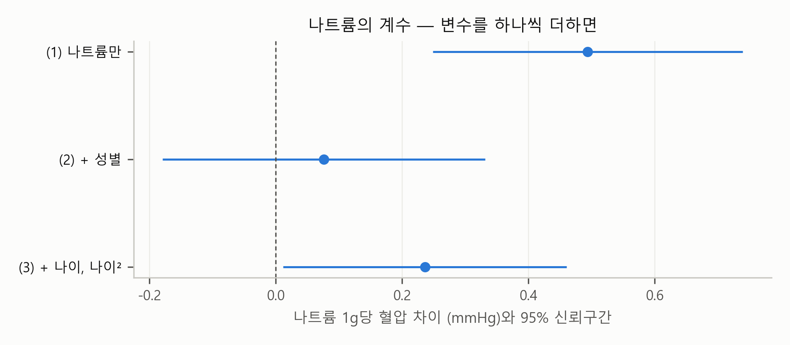
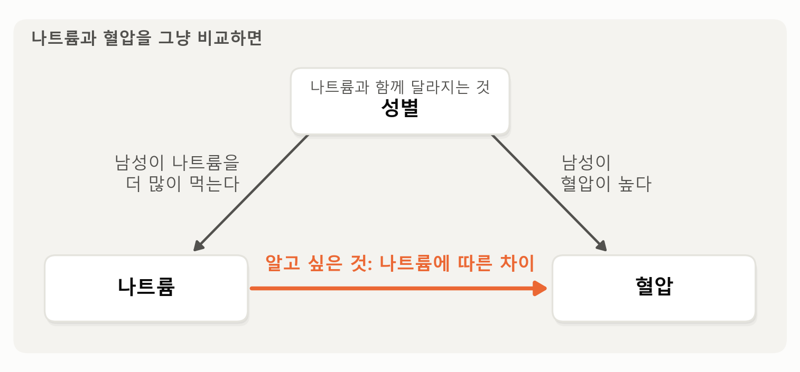
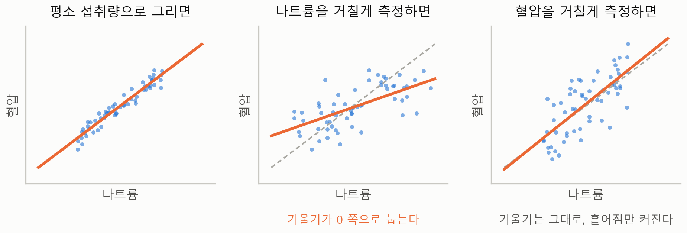

6. 횡단면이 말해 주지 않는 것 — 측정과 자료의 범위#
이 장 첫머리의 보고서는 한계 줄을 이렇게 시작하고 끝냈습니다.
상관이지 인과가 아니다. 소득, 직업, 체중, 식생활처럼 학력과 함께 움직이는 요인은 반영되지 않았고, … 한 해의 횡단면 자료이며, 시설 거주자는 조사 대상에서 빠진다.
“상관이지 인과가 아니다”는 다중회귀분석 장에서 소개한 누락 변수 편향, 곧 회귀식에 넣지 않은 요인이 숫자를 부풀리거나 줄일 수 있다는 이야기입니다. 4절에서는 허리둘레를 넣어 그 한 예를 보았고, 앞 절에서는 원인과 결과의 순서가 거꾸로일 수 있다는 것을 보았습니다. 이 절은 남은 두 가지를 봅니다. 하나는 변수를 어떻게 측정했는가이고, 다른 하나는 이 자료가 누구를, 언제 본 것인가입니다.
미리 답부터 말하면, 하루치 기록처럼 거칠게 측정한 변수는 관계를 실제보다 약하게 보이게 합니다. 그리고 해마다 다른 사람을 뽑는 조사로는 같은 사람의 변화를 볼 수 없고, 조사 명부에서 빠진 사람은 가중치로도 되살아나지 않습니다.
회식 다음 날의 식단 기록 — 나트륨과 혈압#
이번에는 소금입니다. 짜게 먹으면 혈압이 오른다는 것은 잘 알려진 이야기입니다. 국민건강영양조사의 영양조사에는 그 사람이 하루에 먹은 나트륨의 양이 있습니다. 이 자료로 확인해 볼까요? 영양조사까지 마친 사람만 쓰므로, 가중치는 건강설문·검진·영양조사를 모두 반영한 가중치(wt_tot)를 씁니다.

그림 6-1. 수축기 혈압을 나트륨 섭취량에 회귀분석한 계수와 95% 신뢰구간, 아래로 갈수록 회귀식에 변수를 하나씩 더한 것(가중치 wt_tot 적용, 19세 이상 가운데 나트륨과 혈압이 있는 5,793명).
그림에서 보듯이 맨 위의 점, 곧 수축기 혈압을 나트륨 섭취량 하나에 회귀분석한 계수는 0.49입니다. 나트륨을 하루 1g 더 먹는 사람은 혈압이 0.49mmHg 높고, 신뢰구간은 0에서 떨어져 있습니다. 예상대로입니다. 그런데 회귀식에 성별을 더하자 계수가 0.08로 작아지고, 신뢰구간이 0을 포함하게 됩니다.
성별을 넣자 왜 이렇게 줄었을까요? 남성은 여성보다 나트륨을 훨씬 많이 먹습니다(가중 평균으로 하루 3.83g 대 2.67g). 그리고 남성은 여성보다 혈압이 높습니다(122.0 대 117.1). 그래서 성별을 감안하지 않으면, 나트륨을 많이 먹는 사람 가운데 남성이 많고 남성은 혈압이 높으니, 나트륨과 혈압이 함께 움직이는 것처럼 보입니다. 0.49 가운데 대부분은 나트륨 때문이 아니라 남녀의 차이 때문이었던 것이죠. 같은 성별끼리 비교하자 그 몫이 빠졌습니다. 나이까지 더하면 계수는 0.24이고, 신뢰구간(0.01에서 0.46 사이)이 0에서 겨우 떨어집니다.
그림 6-2는 이 관계를 그린 것입니다. 앞에서 본 그림 3-2, 그림 4-3과 구조가 같습니다.

그림 6-2. 나트륨과 혈압을 그냥 비교하면 나트륨에 따른 혈압의 차이에 성별의 몫이 함께 섞인다.
그림에서 보듯이 이번에는 성별이 나트륨과도, 혈압과도 연결돼 있습니다. 남성은 나트륨을 더 많이 먹고 혈압도 높으니, 나트륨과 혈압을 그냥 비교하면 성별을 거쳐 오는 몫이 아래쪽 화살표에 함께 섞입니다. 회귀식에 성별을 넣어 같은 성별끼리 비교하면 그 몫이 빠집니다.
0.24는 작은 숫자입니다. 나트륨을 하루 2g 더 먹는 사람, 곧 꽤 짜게 먹는 사람이라도 혈압이 0.5mmHg쯤 높다는 뜻이니까요. 사람들에게 소금을 줄이게 한 무작위 실험 34편을 모아 본 연구(He, Li, MacGregor, 2013)[1]에서는 소금을 하루 4.4g, 곧 나트륨으로 1.7g쯤 줄였을 때 수축기 혈압이 4.2mmHg 내려갔습니다. 나트륨 1g에 2mmHg 남짓인 셈입니다. 그러면 우리 자료는 소금과 혈압의 관계가 알려진 것보다 훨씬 약하다는 것을 보여 준 걸까요? 그렇게 결론 내리기 전에, 나트륨을 어떻게 측정했는지를 봐야 합니다. 국민건강영양조사의 영양조사는 어제 하루 먹은 음식을 묻습니다(24시간 회상법). 우리가 알고 싶은 것은 그 사람이 평소에 얼마나 짜게 먹는가인데, 자료에 있는 것은 어제 하루의 기록입니다.
회사 건강검진의 문진표를 떠올려 봅시다. “어제 무엇을 드셨나요?” 하필 어제가 회식 날이었던 직원은 찌개와 젓갈과 라면까지 적어, 평소보다 훨씬 짜게 먹은 사람으로 기록됩니다. 평소에 짜게 먹는 직원이 어제는 마침 샐러드로 점심을 때웠다면, 싱겁게 먹는 사람으로 기록됩니다. 하루치 기록은 평소 식습관을 아주 거칠게 측정한 값입니다. 이 자료에서 하루 나트륨 섭취량은 가운데 80%의 사람만 봐도 1.2g에서 5.4g까지 넓게 퍼져 있는데, 그 퍼짐의 상당 부분은 사람의 차이가 아니라 그날그날의 차이입니다.
설명변수가 이렇게 거칠게 측정되면, 회귀 계수는 0 쪽으로 작아집니다. 평소에 짜게 먹는 사람과 싱겁게 먹는 사람이 기록에서 뒤섞이니, 혈압과의 관계가 흐려지는 것이죠. 이것을 감쇠(attenuation)라고 부릅니다. 일상에서 감쇠는 소리나 진동처럼 무언가가 전해지는 동안 점점 약해지는 것을 가리키는데, 여기서는 측정의 잡음에 묻혀 관계가 실제보다 약하게 보이는 것을 그렇게 부릅니다. 종속변수의 측정 오차는 계수를 치우치게 하지 않고 표준오차만 키우지만, 설명변수의 측정 오차는 계수 자체를 0 쪽으로 끌어당긴다는 점이 다릅니다.

그림 6-3. 설명변수와 종속변수의 측정 오차가 회귀 직선에 미치는 영향(가상의 자료). 점선은 왼쪽 패널의 직선이다.
그림에서 보듯이 왼쪽 패널은 가상의 사람들이 평소에 먹는 나트륨과 혈압을 그린 것입니다. 가운데 패널은 같은 사람들의 나트륨을 하루치 기록처럼 거칠게 측정한 것으로, 점이 옆으로 흩어지면서 직선이 0 쪽으로 눕습니다. 오른쪽 패널은 혈압을 거칠게 측정한 것으로, 점이 위아래로 흩어질 뿐 직선의 기울기는 거의 그대로입니다.
그러니 0.24라는 작은 숫자는 “소금은 혈압과 별 관계가 없다”가 아니라 “하루치 기록으로는 그 관계가 실제보다 약하게 보인다”로 읽어야 합니다. 앞에서 말한 소금 줄이기 실험들은 사람들을 무작위로 나눠 실제로 소금을 줄이게 하고 두 무리의 혈압을 비교했으므로, 하루치 기록 때문에 생기는 이런 감쇠가 없습니다. 관찰 자료로 평소 섭취량을 다루는 영양 연구에서는 같은 사람을 이틀 이상 조사한 자료로 하루하루의 변동을 따로 떼어 내는 통계 모형을 쓰기도 합니다. 미국 국립암연구소가 만든 NCI 방법이 대표적입니다[2].
혈압은 검진에서 직접 측정한 값이라 이런 걱정이 적습니다. 세 번 재서 두 번째와 세 번째의 평균을 쓰는 것도 그날의 긴장 같은 우연한 몫을 줄이려는 것입니다. 반면 학력, 음주, 운동, 소득처럼 설문으로 답한 값은 기억이나 체면에 따라 실제와 다를 수 있습니다. 특히 음주량이나 소득은 실제보다 적게 답하는 경향이 있다고 알려져 있습니다. 자료의 변수가 어떻게 측정되었는지는 회귀분석이 알려 주지 않습니다. 이용지침서를 읽어야 압니다.
💡 팁: AI의 보고서가 건강 조사 자료에서 “○○을 많이 먹는 사람이 △△이 높다”처럼 생활 습관과 건강의 관계를 내놓으면, 그 변수를 어떻게 측정했는지 물어보세요. “이 변수는 어떻게 측정했어? 설문 응답이야, 직접 측정한 값이야, 하루치 기록이야?”라고 요청하면 됩니다.
해마다 다른 사람 — 반복 횡단면#
다음은 보고서 한계 줄의 “한 해의 횡단면 자료”와 “시설 거주자는 빠진다”입니다.
국민건강영양조사는 해마다 하지만, 해마다 다른 사람을 뽑습니다. 2023년에 조사한 사람을 2024년에 다시 조사하지 않습니다. 이런 자료를 반복 횡단면(repeated cross-section) 자료라고 부릅니다. 회사로 치면 해마다 정밀 검진 대상 500명을 새로 뽑는 것과 같습니다. 올해 뽑힌 김 부장이 내년에도 뽑힌다는 보장이 없으니, 여러 해의 결과를 모아도 “김 부장의 혈압이 약을 먹기 시작한 뒤 얼마나 내려갔나”는 알 수 없습니다. 앞 절에서 본 “무엇이 먼저인가”를 이 자료로 풀 수 없는 것도 그래서입니다. 같은 사람을 여러 해 따라가는 자료는 패널 데이터라고 부르고, 패널 데이터 분석 장에서 다룹니다. 반복 횡단면 자료로도 “한국 성인의 평균 혈압이 10년 동안 어떻게 바뀌었나” 같은 사회 전체의 변화는 볼 수 있습니다. 조금 더 나아가, 같은 해에 태어난 사람들을 하나의 집단으로 보고 그 집단의 평균을 해마다 이어 볼 수도 있습니다. 예를 들어 1970~1974년생의 평균 혈압을 2014년 자료(40~44세일 때)와 2024년 자료(50~54세일 때)에서 각각 계산해 잇는 것이죠. 사람은 매번 다르지만 같은 세대의 평균을 따라가므로, 이런 자료를 유사 패널(pseudo panel)이라고 부릅니다. 다만 여러 해의 자료를 합칠 때는 해마다 바뀐 조사 항목과 측정 방법을 확인해야 합니다.
시설 거주자는 조사의 표본을 뽑는 명부에서 처음부터 빠집니다. 요양원이나 요양병원에 사는 고령자, 군부대의 장병이 그렇습니다. 이 가운데 요양시설의 고령자는 대개 건강이 좋지 않은 분들이라, 이 조사에 나타난 고령자의 건강은 실제 고령자 전체보다 좋게 나오기 쉽습니다. 앞으로 초고령 인구가 늘어날수록 이 차이는 커질 것입니다. 또 가구가 조사에 응한 뒤에도 검진이나 채혈이나 영양조사를 건너뛰는 사람이 있습니다. 가중치가 이런 탈락의 일부를 보정하지만, 건강이 나빠서 검진에 오지 못한 사람까지 보정해 주지는 못합니다.
요약 — 이 절의 물음과 답
나트륨을 많이 먹는 사람의 혈압이 조금밖에 높지 않다면, 소금은 혈압과 관계가 약할까? 그렇게 결론 내리기 어렵다. 자료의 나트륨은 평소 식습관이 아니라 어제 하루의 기록이다. 설명변수를 이렇게 거칠게 측정하면 계수가 0 쪽으로 작아진다. 이것을 감쇠라고 한다.
해마다 하는 조사를 모으면 같은 사람의 변화를 볼 수 있을까? 볼 수 없다. 해마다 다른 사람을 뽑는 반복 횡단면 자료이기 때문이다. 사회 전체의 평균이 어떻게 바뀌었는지는 볼 수 있다.
가중치를 쓰면 조사에서 빠진 사람까지 대표할 수 있을까? 다 되지는 않는다. 요양시설의 고령자는 처음부터 표본을 뽑는 명부에서 빠지고, 건강이 나빠 검진에 오지 못한 사람도 가중치로 되살아나지 않는다.
이 장을 마치며#
이번 장은 단순회귀분석 장과 다중회귀분석 장에서 배운 회귀분석을 국가 표본조사 자료에 적용했습니다. 새로 배운 것의 중심은 두 가지입니다. 사람을 뽑아서 조사한 자료라서 가중치로 숫자를 바로잡고, 표본설계대로 표준오차를 계산한다는 것입니다. 보고서의 회귀식 자체는 이미 배운 것이었습니다. 성별과 나이를 같게 맞춰 학력을 비교하는 것은 다중회귀의 “다른 조건이 같다면”이었고, 학력과 성별은 더미 변수, 나이와 나이²의 곡선은 제곱항, 학력의 차이가 남녀에 따라 다른지를 본 것은 상호작용이었습니다.
그 회귀식 하나를 여러 방향에서 따져 보는 일이 이 장의 나머지였습니다. 계수가 무엇과 무엇을 비교한 숫자인지(학력만 넣으면 15.0, 나이를 맞추면 7.5), 그 차이가 얼마나 크고 누구에게 해당하는지(\(R^2\), 상호작용), 누구를 분석에 넣을지(혈압약), 무엇이 먼저인지(역인과), 변수를 어떻게 측정했는지(감쇠). 그러면서 방법을 바꿔 가며 결론을 확인하는 강건성 점검도 만났습니다.
그리고 무엇보다 이번 장은 숫자를 읽기 전에 자료를 아는 일이 얼마나 중요한지를 보여 주었습니다. 표본이 모집단보다 나이가 많다는 것, 나이가 많을수록 학력이 낮다는 것, 혈압약을 먹는 사람의 혈압은 약으로 낮춘 혈압이라는 것, 나트륨은 하루치 기록이라는 것. 이런 것들은 회귀분석의 결과표에는 나오지 않습니다. 자료가 어떻게 모였는지를 알아야 보입니다.
그리고 이번 장에서는 한 사람 한 사람의 기록을 AI에게 보여 주지 않았습니다. AI에게 자료 대신 자료의 설명을 보내 코드를 받고, 그 코드를 우리 컴퓨터에서 돌렸습니다. AI가 본 것은 자료의 설명과 집계 결과뿐이었습니다. 이것은 이번 장만의 특별한 사정이 아닙니다. 여러분이 회사나 기관에서 분석하게 될 자료의 상당수는 회사의 기밀, 업무상 알게 된 비밀, 법이 보호하는 개인정보, 승인 조건이 붙은 연구 자료처럼 AI에게 그대로 보여 줄 수 없는 자료일 것입니다. “AI에게 데이터를 넣어 주고 분석해 달라고 하면 된다”는 말은 그런 제약이 없을 때의 이야기입니다.
그런 자료 앞에서도 AI는 여전히 좋은 조수입니다. 무엇을 분석할지 함께 정하고, 코드를 짜 주고, 오류를 고치는 것을 도와줍니다. 다만 자료를 만지고 코드를 돌리는 손은 내 손이어야 합니다. AI도 틀릴 수 있으니 결과를 점검할 줄 알아야 하고, AI에게 보여 줄 수 없는 자료는 내가 직접 분석해야 합니다. 파이썬 같은 도구를 스스로 다룰 줄 알아야 하는 이유가 이 둘입니다. 이 장 끝의 “직접 해 보기”가 그 연습입니다.